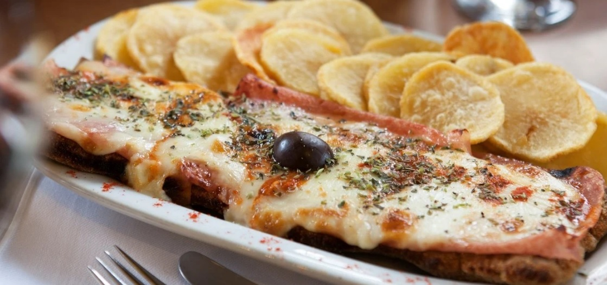
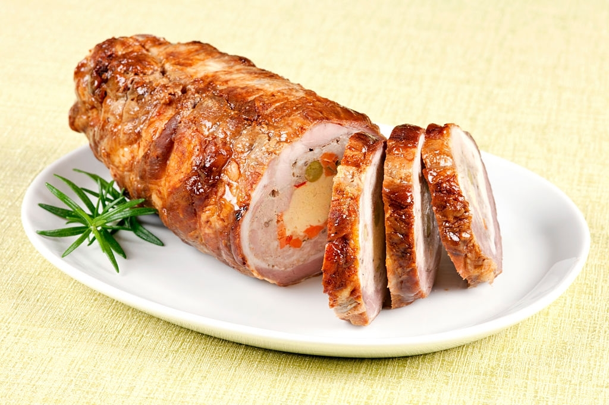
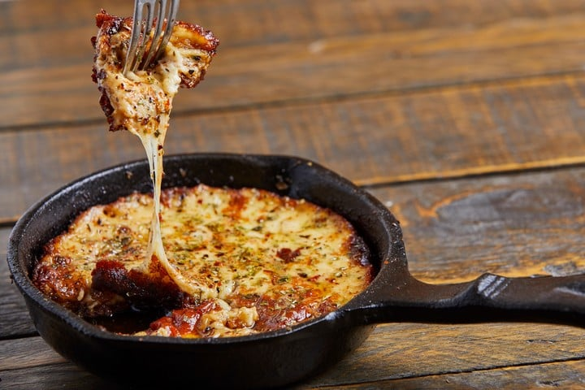
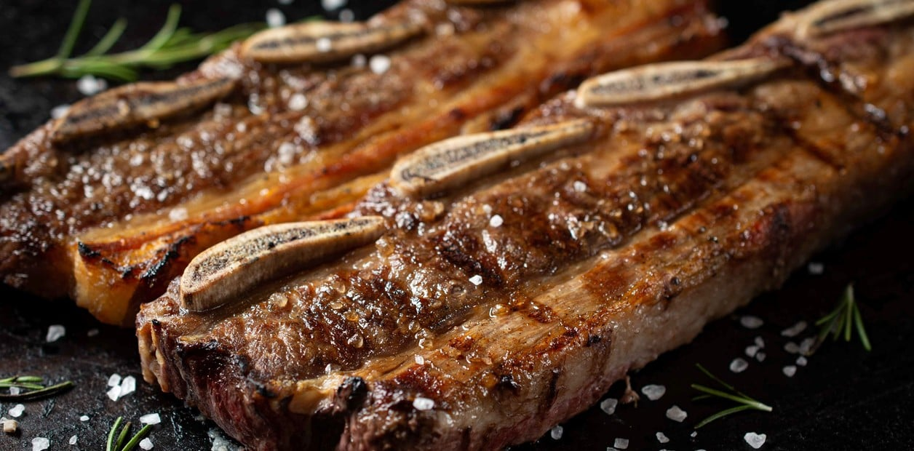

MILANESA A LA NAPOLITANA
INGREDIENTES
- 4 Huevos
- 200 gr. de jamón cocido
- 2 dientes de ajo
- Sal y pimienta, a gusto
- Perejil picado, a gusto
- 500 gr. de mozzarella
- Pan rallado, cantidad necesaria
- 1/2 litro de salsa de tomate
- 1 Kilo de nalga para milanesa
- Aceite para freír
PREPARACIÓN
-
Paso 1
Pelar los ajos y picar junto con el perejil.
-
Paso 2
Colocar los huevos en un bowl y batir hasta disolverlos bien. Luego agregar el perejil, los ajos y condimentar con sal y pimienta.
-
Paso 3
Colocar la carne en la mezcla anterior, dejar unos minutos, retirar y pasar por pan rallado.
-
Paso 4
En una sartén con abundante aceite caliente freír las milanesas. Retirar y escurrir en papel absorbente.
-
Paso 5
Acomodar las milanesas en una placa para horno, bañar con salsa de tomate, encima el jamón cocido y por ultimo la mozzarella.
-
Paso 6
Cocinar en horno bien caliente hasta gratinar la mozzarella.
MATAMBRE ARROLLADO
INGREDIENTES
- 1 matambre
- Sal y pimienta
- 5 huevos duros
- 4 zanahorias ralladas
- 2 cucharadas de perejil picado
- 1 cucharada de ajo picado
- 1 cucharada de romero, tomillo y de salvia
- 200 g de queso rallado
- 1 sobrecito de gelatina sin sabor (7 g)
PREPARACIÓN
-
Paso 1
Quitar al matambre el exceso de grasa. Estirarlo (con la grasa hacia arriba). Salpimentar.
-
Paso 2
Colocar el ajo, el queso rallado, la zanahoria, las hierbas. Espolvorear con la gelatina.
-
Paso 3
Colocar los huevos duros en fila.
-
Paso 4
Enrollar con cuidado y atar.
-
Paso 5
Hervir el arrollado en una olla profunda, por 4 horas. Si se desea, saborizar el agua con ajo y laurel. Cuando esté tierno, apagar el fuego y dejarlo que se enfríe en el agua.
-
Paso 6
Retirarlo y prensarlo con un peso encima. Cortar en rodajas.
PROVOLETA
INGREDIENTES
- 3 cebollas grandes
- 40 g de manteca
- 800 g de queso provolone parrillero
- Sal y pimienta, a gusto
PREPARACIÓN
-
Paso 1
Cortar las cebollas en juliana.
-
Paso 2
Llevar al fuego una sartén con la manteca y rehogar la cebolla unos 50 minutos, a fuego muy bajo, hasta que queden totalmente tiernas y dulces.
-
Paso 3
Probar la cebolla y, si hiciera falta, sumar una pizca de azúcar. Subir el fuego y cocinar unos minutos más para que tomen más color. Retirar y reservar.
-
Paso 4
Cortar el queso en 4 rodajas de 200 gramos. Disponerlas en una sartén de hierro del mismo diámetro (provoleteras).
-
Paso 5
Llevarlas a horno precalentado con fuego máximo. En horno de barro o piedra se cocinan en 10 minutos. En horno doméstico, al máximo, llevan 15. Hay que cocinarlas hasta que se fundan.
-
Paso 6
Retirar la sartén del horno y distribuir encima la cebolla caramelizada. Salpimentar a gusto y servir enseguida en la misma sartén.
LOCRO
INGREDIENTES
- 300 gr de maíz blanco partido
- 200 gr de poroto pallares blanco
- 200 gr de panceta
- 150 gr de chorizo criollo
- 1/2 chorizo colorado
- 200 gr de pechito de cerdo
- 200 g de falda
- 1 cebolla
- 500 gr de calabaza
SALSA PICANTE
- 100 g de cebolla de verdeo picada
- 1 taza de aceite mezcla
- Pimentón y ají molido a gusto
- 1/2 taza de agua
PREPARACIÓN
-
Paso 1
Remojar los porotos pallares y el maíz blanco 24 horas antes de preparar el guiso (guardar en recipiente con agua en heladera).
-
Paso 2
Cortar en cubos todos los ingredientes.
-
Paso 3
Cocinar en una cacerola el maíz junto con los porotos, la calabaza y la cebolla con 2 litros de agua.
-
Paso 4
Revolver con cuchara de madera cada 15 minutos.
-
Paso 5
Pasada una hora de cocción sumar las carnes. Revolver.
-
Paso 6
La salsa picante. Picar la cebolla de verdeo y verterla en una ollita con el aceite a baja temperatura. La idea es que se cocine lento y no quede crujiente.
-
Paso 7
Añadir 2 cucharadas de pimentón y 2 cucharadas de ají molido a medio vaso de agua y sumarlo al aceite. Mezclar. Cocinar 5 minutos más y retirar.
-
Paso 8
Servir el locro bien caliente en cazuela de barro y la salsa picante en recipiente aparte para incorporar a gusto.
CHIPA GUAZÚ
INGREDIENTES
- 1 kilo de choclo
- 5 huevos
- 1 taza de leche
- ½ taza de manteca
- 2 cebollas
- 300 gramos de queso
- Sal y pimienta, a gusto
PREPARACIÓN
-
Paso 1
Pelar y cortar las cebollas en cubitos.
-
Paso 2
En una sartén poner a calentar 3 cucharadas de manteca y agregar la cebolla picada con una pizca de sal y pimienta. Freír hasta transparentar la cebolla.
-
Paso 3
Procesar o licuar el choclo, los huevos, la cebolla salteada, el aceite y la leche.
-
Paso 4
Verter la mezcla en una placa aceitada y sumar el queso desmenuzado. Agregar sal al gusto, y mezclar.
-
Paso 5
Hornear a 180° durante unos 45 minutos.
ASADO A LA PARRILLA
INGREDIENTES
- 1 y 1/2 kilo de asado de tira
- Sal y pimienta, a gusto
PREPARACIÓN
-
Paso 1
Encender el fuego para lograr una buena cantidad de brasas, puede ser tanto con carbón como leña.
-
Paso 2
Colocar una buena capa de brasas debajo de la parrilla y calentar los fierros hasta que adquieran temperatura.
-
Paso 3
Salar la carne, al tratarse de un corte pequeño, se puede usar sal fina, sin embargo, siempre lo aconsejable es utilizar sal parrillera, la pimienta es a gusto de cada asador.
-
Paso 4
El tiempo de cocción dependerá del tamaño de la tira, tanto por el corte que haya realizado el carnicero como por el tamaño del hueso, ya que si es un animal chico los huesos serán pequeños, en cambio si es un animal más grande, también lo serán los huesos.
Aproximadamente, se calcula media hora del lado de los huesos, hasta observar que comienzan a brotar pequeñas gotas de sangre del lado de la carne, es un buen momento para dar vuelta la tira.
Una vez esté del lado de la carne solo dorar la misma para que quede crujiente y con color, bastará con unos diez minutos como mucho y estará listo para salir del fuego y reposar unos minutos.
-
Paso 5
Servir y acompañar con papas fritas.